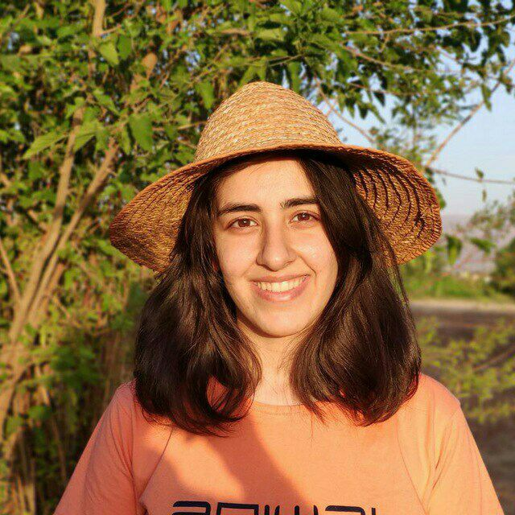

I'm Sima. I work as a cybersecurity Goverance, Risk, and Compliance (GRC) Analyst in Toronto, Canada. I obtained my MASc from Concordia University in Montréal, where I worked in the NSERC/Ericsson Audit Ready Cloud (ARC) Research Group and contributed as a researcher to the NSERC/Ericsson IRC in SDN/NFV Security project. My research focused on optimal proactive cyber attack detection and non-disruptive mitigation in cloud environments. Prior to that, I completed my education in in Software Engineering and Information Technology Engineering- Enterprise Architecture in Shahid Beheshti University, Iran. Outside of work, I love food, cooking, baking, growing my own herb, and debating on social/psychological topics. In my free time I go for long walks, work out, and rollerblade.

Your photo hereassets/images/profile.jpg'">
Work Experience
Cybersecurity GRC Analyst,
C&R Software, Toronto, Canada
- Lead audit activities for SOC1, SOC2, ISO 42001
- Control testing automation
- Support PCI-DSS and ISO 27001 audit activities
- GRC engineering, policy-as-code, automating internal evidence collection
Academic Experience
Grduate Research Assistant
- Cost-Effective Approach to Proactive and Non-disruptive Attack Mitigation in Kubernetes Clusters
- Proactive Security Policy Enforcement for Containers
Undergraduate & Graduate Research Assistant
- Optimal Firewall Rule Composition and Decomposition in Cloud
- Software Project Estimation using Improved Use Case Point (software development risks)
Education
Concordia University
MASc in Information Systems Security
Shahid Beheshti University
BSc in Computer Software Engineering
MSc in Information
Technology (Enterprise Architecture)
With distinction, exempted from national graduate school entrance exam, and received the Direct MSc Award
Publications
- Warping the Defence Timeline: Non-disruptive Proactive Attack Mitigation for Kubernetes Clusters. Sima Bagheri, Hugo Kermabon-Bobinnec, Suryadipta Majumdar, Yosr Jarraya, Lingyu Wang, Makan Pourzandi. ICC 2023.
- ProSPEC: Proactive Security Policy Enforcement for Containers. Hugo Kermabon-Bobinnec, Mahmood Gholipourchoubeh, Sima Bagheri, Suryadipta Majumdar, Yosr Jarraya, Makan Pourzandi, Lingyu Wang. CODASPY 2022.
- Dynamic Firewall Decomposition and Composition in the Cloud. Sima Bagheri, Alireza Shameli-Sendi. IEEE Transactions on Information Forensics & Security, 2020.
- Software Project Estimation using Improved Use Case Point. Sima Bagheri, Alireza Shameli-Sendi. SERA 2018.
- ACE-WARP: A Cost-Effective Approach to Proactive and Non-disruptive Attack Mitigation in Kubernetes Clusters. Sima Bagheri, Hugo Kermabon-Bobinnec, Mohammad Ekramul Kabir, Suryadipta Majumdar, Yosr Jarraya, Lingyu Wang, Makan Pourzandi. Submitted to IEEE TIFS (status as provided).
- PerfSPEC: Performance Profiling-based Proactive Security Policy Enforcement for Containers. Hugo Kermabon-Bobinnec, Sima Bagheri, Suryadipta Majumdar, Yosr Jarraya, Lingyu Wang, Makan Pourzandi. Submitted to IEEE TDSC (status as provided).
Teaching
Concordia University
- SOEN 321 — Information Systems Security: Tutor, Programmer on Duty (POD), Winter 2022
- INSE 6130 — Operating System Security: Marker, Fall 2022
Shahid Beheshti University
- Software Engineering I/II: Head TA, assignments and project design, Fall 2017 / Winter 2018
- Computer Networks: Head TA, assignments and mini-project design, Winter 2018
Talks
- Warping the Defence Timeline: Non-disruptive Proactive Attack Mitigation for Kubernetes Clusters — ICC, Rome, Italy, May 2023
- Proactive Non-Disruptive Cluster-level Mitigation in Container-based Environment — Ericsson research progress, Montréal, April 2022
- Software Project Estimation using Improved Use Case Points — IEEE/ACIS SERA, Kunming, China, June 2018
Awards
- Concordia University Travel Award (2023)
- Concordia Graduate Student Association conference funding (2023)
- Best Undergraduate Researcher Student Award with research paper (2017)
- Exceptional Talent admission to MSc program, exempted from national graduate school entrance exam (2017)